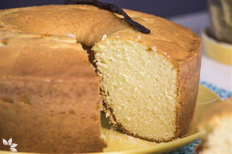

RECEITAS DO CHELÃO
o brabo de BH
BOLO DE BAULILHA

Ingredientes:
- 1 e 1/2 xícaras de açúcar
- 1/2 xícara de manteiga amolecida
- 2 ovos
- 2 colheres de chá de essência de baunilha
- 1 e 1/2 xícaras de farinha de trigo
- 1 e 3/4 colheres de chá de fermento em pó
- 1/2 xícara de leite
Modo de preparo:
- Preaqueça o forno a 180°C e unte uma forma.
- Bata o açúcar e a manteiga até obter uma mistura cremosa.
- Adicione os ovos e a essência de baunilha e bata novamente.
- Misture a farinha de trigo e o fermento em pó em outra tigela.
- Adicione a mistura de farinha à mistura de açúcar e ovos e misture bem.
- Adicione o leite e misture novamente.
- Despeje a massa na forma e asse por cerca de 30 minutos.
.
michelmaike©®